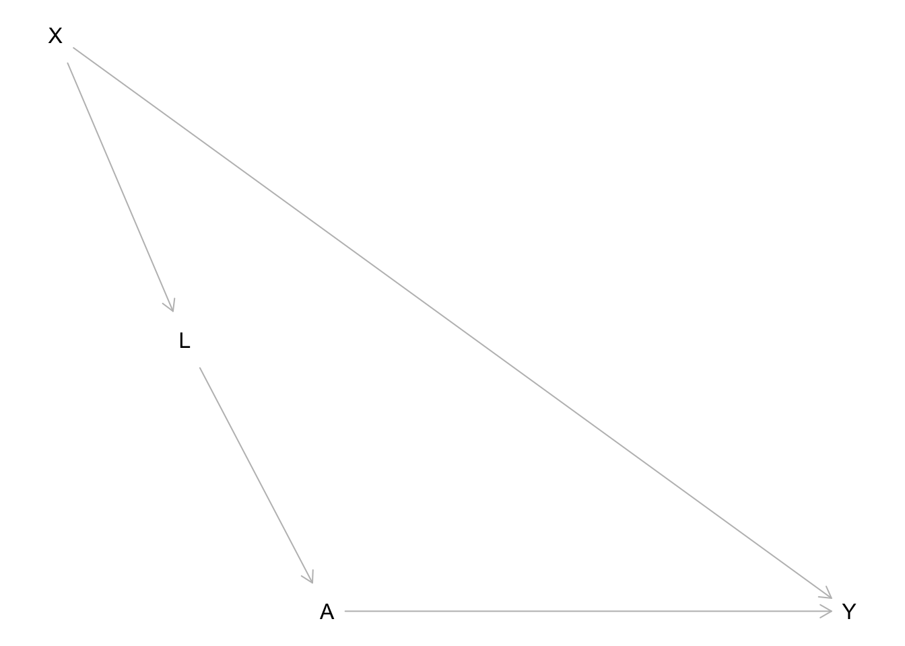

library(dagitty)
library(tidyverse)
library(scales)Testing causal graphs
Goals
- Evaluate the accuracy of a causal graph by testing the conditional independencies implied by the graph structure.
You can download a template file for this activity here.
Discussion
Previously we used the rules of d-separation to block noncausal paths between the treatment and the outcome.
We can use d-separation to understand whether any pair of variables can be made conditionally independent given another set.
Unlike what we did before (blocking only noncausal paths), every path between a pair of variables is one we want to block. Let’s take the following causal graph as an example (which shows treatment \(A\), outcome \(Y\), and two other measured variables \(X\) and \(L\)):
dag <- dagitty('dag {
bb="0,0,1,1"
A [exposure,pos="0.252,0.350"]
L [pos="0.185,0.268"]
X [latent,pos="0.124,0.176"]
Y [outcome,pos="0.498,0.350"]
A -> Y
L -> A
X -> L
X -> Y
}
')
plot(dag)
Consider X and A: what conditioning set would d-separate X and A (make X and A conditionally independent)?
- 2 paths connecting X and A:
X -> L -> A: Include L in the conditioning setX -> Y <- A: Already blocked by collision node Y
- So X and A are conditionally independent given L
- This is a testable implication of our graph because we can test if this is true in our data.
We can go through this process for every pair of variables.
- Note: Any variables that are directly connected with an edge can’t be d-separated.
Try it out: For each pair of variables below, determine what sets of other variables would d-separate the two variables (if any).
- X and L:
- X and A: L
- X and Y:
- L and A:
- L and Y:
- A and Y:
The result of this process is a set of conditional independence statements that can be tested with data.
For complex graphs, we won’t want to do this by hand. The dagitty R package (already loaded above) provides functions for listing these conditional independencies and testing them in data.
We can list conditional independencies with the impliedConditionalIndependencies() function.
- Note: Whenever we encounter a new function, we should use
?function_namein the Console to look at the documentation.
dag_cis <- impliedConditionalIndependencies(dag, type = "all.pairs")
dag_cisA _||_ X | L
L _||_ Y | A, XThe _||_ is the symbol for independence, and the variables to the right of the | indicate the variables conditioned on. So the above lines read:
- A and X are conditionally independent given L
- L and Y are conditionally independent given A and X
This agrees with what we did by hand.
BTW: the following generates the symbol in the LaTeX typesetting language:
\perp\!\!\!\perp\[ \perp\!\!\!\perp \]
Let’s simulate data from the above causal graph so that we can see how to test these conditional independence implications using data:
set.seed(451)
n <- 10000
sim_data <- tibble(
# Generate X
X = rnorm(n, mean = 0, sd = 1),
# Generate L
mean_L = 2*X,
noise_L = rnorm(n, mean = 0, sd = 1),
L = mean_L + noise_L,
# Generate A (binary)
p_A = rescale(L, to = c(0,1)),
A = rbinom(n, size = 1, prob = p_A),
# Generate Y
mean_Y = 3*X + 5*A,
noise_Y = rnorm(n, mean = 0, sd = 1),
Y = mean_Y + noise_Y
)The localTests() function performs the conditional independence (CI) tests. The type argument controls what statistical procedure is used to test for conditional independence and needs to be set appropriately based on the types of variables in the data.
type = "cis": When all variables are quantitative and have linear relationships with each other. If some are binary, this still works ok.type = "cis.loess": When all variables are quantitative and some have nonlinear relationships with each other.type = "cis.chisq": When all variables are categorical.type = "cis.pillai": When there is a mix of categorical and quantitative variables.
We’ll use type = "cis" because our variables are quantitative and binary with linear relationships:
localTests(dag, data = sim_data, type = "cis", tests = dag_cis) estimate p.value 2.5% 97.5%
A _||_ X | L -0.003386953 0.73488934 -0.02298648 0.016215174
L _||_ Y | A, X -0.023522629 0.01866732 -0.04310479 -0.003922407Every row of output corresponds to one CI test. The columns are as follows:
estimate:- This is a correlation coefficient when
typeis “cis”, “cis.loess”, or “cis.pillai”. A value close to zero suggests independence. - This is a normalized version of a chi-squared statistic when
typeis “cis.chisq”. A value close to zero suggests independence. In terms of scale, 0.01 is considered quite close to 0, 0.05 is considered kind of close to 0, and 0.08 is considered far from 0.
- This is a correlation coefficient when
p.value:- The p-value for the conditional independence test. The null hypothesis is that the variables are conditionally independent (no relationship). High p-values lead us to conclude that the conditional independence actually holds.
- Sometimes a particular type of test won’t output a p-value but will output a confidence interval. See below.
2.5%and97.5%:- The lower and upper bounds of a 95% confidence interval for the estimate. You’ll see these for some types of conditional independence tests when the estimate is a correlation. For correlations, the null value is zero.
What if a p-value is low for a CI test?
- This would lead us to reject the null hypothesis of conditional independence.
- e.g., L and Y are supposed to be conditionally independent given A and X but the p-value leads us to say that they’re still dependent.
There are a couple of possibilities in interpreting this result:
The hypothesis test result was an error. The chance that at least one test gives an incorrect result increases the more tests we do. (This is the idea of multiple testing.)
Also look at the
estimatecolumn, which measures the magnitude of the relationship. If this is small even though the p-value is small, we may interpret this as “pretty much conditionally independent”.- (Because it’s possible to have a small p-value for a small, nonzero effect.)
Maybe the hypothesis test is giving us the correct result: L and Y are indeed still related even after conditioning on A and X. If so, we might want to update our graph:
- We could add a direct edge connecting L and Y.
- We could add a common cause of L and Y.
- Before doing either of these, think about the data-generating process and whether it makes sense.
Exercises
Exercise 1
Here we’ll look at biological data from a protein interaction network. Take a peek at the data below:
protein_data <- read_csv("https://raw.githubusercontent.com/ankurankan/2020-dagitty-manual/master/protocol3/protein_signal.csv")
# Randomly subset protein_data to 1000 cases
# to speed up subsequent computations
set.seed(451)
protein_data_subs <- slice_sample(protein_data, n = 1000)
head(protein_data_subs)The hypothesized causal graph is below.
- Note: If the graph looks cut off in RStudio, you can also paste the
dag { ... }portion into DAGitty web interface in the “Model code” pane on the right.
protein_dag <- dagitty('dag {
bb="-0.5,-0.5,0.5,0.5"
Akt [pos="-0.115,0.052"]
Erk [pos="-0.061,-0.001"]
Jnk [pos="-0.208,-0.149"]
Mek [pos="-0.063,-0.096"]
P38 [pos="-0.155,-0.141"]
PIP2 [pos="-0.337,0.063"]
PIP3 [pos="-0.278,-0.068"]
PKA [pos="-0.127,-0.200"]
PKC [pos="-0.111,-0.287"]
Plcg [pos="-0.337,-0.177"]
Raf [pos="-0.066,-0.204"]
Mek -> Erk
PIP2 -> PKC [pos="-0.489,-0.417"]
PIP3 -> Akt
PIP3 -> PIP2
PIP3 -> Plcg
PKA -> Akt
PKA -> Erk
PKA -> Jnk
PKA -> Mek
PKA -> P38
PKA -> Raf
PKC -> Jnk [pos="-0.188,-0.258"]
PKC -> Mek [pos="-0.021,-0.245"]
PKC -> P38 [pos="-0.166,-0.227"]
PKC -> Raf
Plcg -> PIP2
Plcg -> PKC [pos="-0.248,-0.271"]
Raf -> Mek
}')
plot(protein_dag)The code below creates a scatterplot matrix that shows the relationship between each pair of variables using a scatterplot. For example, the plot in row 1, column 2 plots the Raf protein abundance vs. Mek protein abundance. The numbers in the lower triangle give the correlation coefficient between the two variables.
Based on this plot, what should the type argument be when you run conditional independence tests with localTests()?
panel.cor <- function(x, y) {
par(usr = c(0, 1, 0, 1))
r <- cor(x, y)
txt <- format(r, digits = 2)
txt <- str_c("Cor: ", txt)
text(0.5, 0.5, txt)
}
pairs(protein_data_subs, upper.panel = panel.smooth, lower.panel = panel.cor)Below we use impliedConditionalIndependencies() to get a list of testable implications. This time we use type = "missing.edge" instead of type = "all.pairs".
- Because this graph is so much more complex, checking for conditional independence between all pairs of variables results in a ton of conditional independence statements. (In fact, there are 7182 of them.)
- When using “missing.edge” we focus on conditional independencies that arise from a missing edge between two variables. This results in a much more manageable set of conditional independence statements to test.
protein_dag_cis <- impliedConditionalIndependencies(protein_dag, type = "missing.edge")In the code chunk below, use the appropriate type argument in localTests() to perform the CI tests.
- Note: The
R = 100argument is needed for thistypeto set the number of bootstrapping iterations for obtaining the confidence interval.
# Obtain and display a data frame of CI test results
# We use a subset of the protein data for computational time reasons
# The system.time() function measures how long a command takes to run
system.time({
protein_dag_ci_test_res <- localTests(protein_dag, data = protein_data_subs, tests = protein_dag_cis, type = ___, R = 100)
})
protein_dag_ci_test_resWe can plot the results of these tests with the plotLocalTestResults() function from dagitty. Based on these results, what modifications to the graph should we investigate first?
# Sort the data frame by the magnitude of the estimate
# and plot the test statistics (points) and
# 95% confidence intervals (horizontal bars)
# Just below this code chunk on the right, click the
# leftmost white button to open a zoomed window of the plot
protein_dag_ci_test_res %>%
arrange(abs(estimate)) %>%
plotLocalTestResults()Exercise 2
Here you’ll draw a causal graph for a particular context and test/update your graph based on conditional independence testing.
First navigate to this page, and choose one of the following datasets by exploring the associated codebook:
- Election Data - County
- FEV (Lung Function) and Smoking
- Home Sales in NY
Read in the chosen dataset, and take a look at the data by entering View(dataset_name) in the Console.
election <- read_csv("https://mac-stat.github.io/data/election_2020_county.csv")
# Read in and process FEV data
lungs <- read_csv("https://mac-stat.github.io/data/fev.csv")
lungs <- lungs %>%
# Recode sex and smoke as 0/1 variables
mutate(
sexFemale = ifelse(sex=="female", 1, 0),
smoke = ifelse(smoke=="smoker", 1, 0)
) %>%
select(-sex)
# Read in and process the homes data
homes <- read_csv("https://mac-stat.github.io/data/homes.csv")
homes <- homes %>%
select(-c(Fuel.Type, Heat.Type, Sewer.Type))Draw a causal graph using DAGitty. If you include variables in your graphs that are not in the data, mark them as unmeasured by clicking the variable and then hitting “u” or checking the “unobserved” checkbox in the top left.
Paste all the code from the “Model code” pane below.
dag <- dagitty('
Paste your dag { ... } here
')
plot(dag)Use impliedConditionalIndependencies() to generate a list of testable implications:
- If you have unmeasured variables in your graph, use
type = "missing.edge"to ensure that no conditional independencies involving those unmeasured variables are returned. (While these CIs are real implications about your graph, they’re not testable.) - Otherwise use
type = "all.pairs".
dag_cis <- impliedConditionalIndependencies(dag, type = ___)
dag_cisUse localTests() to test your graph. Inspect the resulting table of test results and, if desired, the plot form with plotLocalTestResults(). Is your graph consistent with the data? What updates might you make?
system.time({
dag_ci_test_res <- localTests(___)
})
dag_ci_test_res